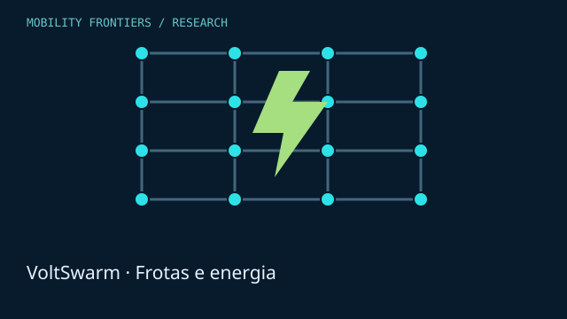

VoltSwarm · Frotas e energia
Agentes de veículos elétricos coordenam viagens e recarga sob falhas de infraestrutura.

Protótipo de pesquisa independente com dados sintéticos. Inovação é uma hipótese investigada, não superioridade ou revolução comprovada.
Pesquisa que pode evoluir para produto
Hipótese de inovação
Tratar energia, filas de carregamento e demanda de passageiros como um problema conjunto. Explora quando coordenação explícita de recarga é mais útil que escolher o carregador mais próximo ou aprender apenas com durações passadas.
Implementação atual
Veículos avançam em uma malha de 16 zonas, consomem energia por trecho e precisam reservar energia para alcançar um carregador após cada viagem. Compara carregador mais próximo, previsão de fila por reservas e bandit contextual com aprendizado de duração até concluir recarga.
Experimentos e validação
18 configurações, 54 execuções de teste. Bandit treinado em seeds 100–111 com frota 16; avaliado em seeds 7–9 com frotas 12/24. Mede serviço, fila, energia, bateria mínima e balanço energético; inclui estação indisponível no cenário de tempestade.
Limites e resultados negativos
Simulação sintética de microveículos com bateria de 12 kWh. Não usa sessões reais de recarga, modelo eletroquímico ou fluxo de potência da rede. Bandit não é deep RL e decisões de recarga incompletas não atualizam a estimativa, o que pode causar viés.
Experimente as decisões
Selecione uma configuração e execute para carregar o resultado Python correspondente. A reprodução mostra a evolução temporal; não executa Python no navegador.
Loading…
Compare referências e propostas
Os resultados incluem políticas que perdem para referências simples. Explore o mesmo cenário e leia métricas individuais antes de concluir que aprendizado ou coordenação sempre ajudam.
Dados, hipóteses e procedência
Dados e infraestrutura sintéticos. Cada aresta tem 0,8 km e leva um minuto; carregador de 30 kW por porta. A indisponibilidade da estação 7 ocorre dos minutos 65 a 104. Não há controle de hardware.
Reproduza ou modifique
Extraia o ZIP e use Python 3.10 ou superior. Sem dependências externas. O README documenta parâmetros, seeds, unidades e limites.
python voltswarm.py --output report.json
python -m unittest discover -vO próximo avanço a demonstrar
Calibrar consumo com telemetria e sessões reais; incluir tarifas, degradação e limites elétricos. Testar aprendizado multiagente com avaliação fora de distribuição e ablações justas.
Inspecione a evidência
Parâmetros, resultados individuais e limitações
Loading…